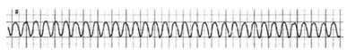

Questão 1 · Atenção Primária à Saúde APS no Brasil · Avaliação da Qualidade em Atenção Primária à Saúde · 4000184044A nova gerente de uma Unidade Básica de Saúde (UBS) decide criar uma página virtual para que os usuários possam enviar reclamações sobre problemas do serviço, o que cria um clima de descontentamento entre os trabalhadores da equipe. Assinale a alternativa correta.
A Trata-se de uma excelente iniciativa da gerente da UBS para identificar os maus trabalhadores da equipe.
B É uma forma de a gerente reforçar sua autoridade diante da equipe de saúde e ganhar a simpatia dos usuários.
C A iniciativa poderia ser válida se fosse fruto de diálogo para valorizar os usuários, trabalhadores e gestores na construção do processo de produção da saúde.
D Deve haver um processo de formação dos usuários para que as reclamações sejam relevantes.
Questão 2 · Vigilância Sanitária · Vigilância Ambiental · Vigilância em Saúde · 4000184043Em um município de pequeno porte, o serviço de urgência atende 4 pessoas com quadro agudo de diarreia e vômito, e um ponto comum na história delas é terem comido peixes mortos que estavam boiando no rio que passa pela cidade. Assinale a alternativa correta sobre a atuação adequada do Sistema Único de Saúde (SUS).
A O SUS não tem qualquer atuação sobre questões relacionadas ao meio ambiente e deve delegar à pasta adequada.
B A investigação de mortes de peixes deve ser feita somente por órgãos estaduais, pois os rios passam por várias cidades.
C A população deve ser alertada a não consumir os peixes e a prefeitura deve comunicar o fato ao Ministério do Meio Ambiente.
D A investigação sobre a morte de peixes deve ser imediata e a população deve ser alertada para não consumir os peixes.
Questão 3 · Princípios e Diretrizes do SUS na Lei n 80801990 · Lei n 80801990 · 4000184042Assinale a alternativa correta sobre as comissões intergestores.
A As comissões intergestores devem pactuar com a organização e o funcionamento das ações e serviços de saúde integrados em redes de atenção à saúde.
B Das comissões intergestores, a de âmbito regional é vinculada ao Ministério da Saúde.
C Nas comissões intergestores, os gestores públicos são representados pelo Secretário de Saúde do maior estado ou do maior município.
D As comissões intergestores devem pactuar com a organização dos serviços, sem qualquer dicussão sobre financiamento.
Questão 4 · Planejamento em Saúde · 4000184041Assinale a alternativa correta sobre a Relação Nacional de Medicamentos Essenciais (RENAME).
A A RENAME substitui o Formulário Terapêutico Nacional (FTN) nos municípios de pequeno porte.
B A RENAME é acompanhada pelo FTN, que subsidia a prescrição, a dispensação e o uso dos seus medicamentos.
C Todas as doenças existentes estão contempladas na RENAME.
D A RENAME é atualizada anualmente com base nos pareceres das sociedades médicas de especialidade e em consulta popular.
Questão 5 · Pandemias · 4000184040Assinale a alternativa correta sobre pandemias.
A Na falta da Organização Mundial da Saúde (OMS), representantes de pelo menos dois países de cada continente podem declarar a existência de uma pandemia.
B As pandemias tendem a ter duração de pelo menos 5 anos até serem controladas em sua gravidade.
C O coeficiente de letalidade de uma determinada doença em uma pandemia é maior do que em uma epidemia.
D A última pandemia antes da covid-19 foi a da influenza A, causada pelo vírus H1N1.
Questão 6 · COVID 19 · Epidemiologia · 4000184039Comparando a covid-19, provocada pelo SARS-CoV-2 e a AIDS, causada pelo HIV, assinale a alternativa correta.
A A AIDS matou mais pessoas idosas do que a covid-19, principalmente nos primeiros casos.
B A transmissibilidade e a infectividade do HIV são maiores que as do SARS-CoV-2.
C A taxa de letalidade da AIDS, nos anos 1980, era maior que a da covid19 em 2020.
D Os resultados da vacina contra a covid-19 são considerados frustrantes, pois não houve prevenção de novos casos e encerramento da pandemia.
Questão 7 · Notif icação em Saúde do Trabalhador no Sistema Nacional de Agravo de Notif icação SINAN · 4000184038Sistema de Inf ormação de Agravos de Notif icação SINAN O desabamento de um piso em uma empresa causou a morte de 10 pessoas e ferimentos graves em outras 10. Durante a investigação realizada pela auditoria scal do trabalho e pela vigilância em saúde do SUS, veri cou-se que todas as pessoas estavam em horário de trabalho, mas 5 delas não eram registradas. Assinale a alternativa correta.
A Todos os casos de morte e ferimentos graves devem ser notificados através do Sistema de Informação de Agravos de Notificação (SINAN) como acidentes de trabalho.
B Somente os casos de morte devem ser notificados através do SINAN como acidentes de trabalho.
C Somente os casos de morte dos trabalhadores formais devem ser notificados através do SINAN como acidentes de trabalho.
D Somente os casos de morte e de ferimento dos trabalhadores formais devem ser notificados através do SINAN como acidentes de trabalho.
Questão 8 · Característica gerais e epidemiologia · Leptospirose · Modo de transmissão · 4000184037Uma determinada região é fortemente castigada por chuvas por vários dias seguidos. As unidades de saúde começam a atender pessoas com febre e muitas delas são diagnosticadas com leptospirose. Assinale a alternativa correta sobre essa doença.
A O coeficiente de letalidade da doença é alto e, por isso, é preciso que todos os municípios, mesmo os pequenos, tenham unidades de terapia intensiva.
B É causada pela
C O intervalo de tempo entre a transmissão da infecção e o início dos sinais e sintomas varia de 1 a 7 dias.
D A maioria das pessoas infectadas evolui com febre e icterícia, com manifestações hemorrágicas.
Questão 9 · Legislação sobre os idosos · 4000184036Uma grande empresa com muitos adoecimentos do sistema musculoesquelético e da esfera psíquica decide implementar uma política de corte de pessoal e decide começar pelas pessoas com mais idade, em particular aquelas com mais de 60 anos de idade. Assinale a alternativa correta sobre essa situação.
A Essa medida fere a Política Nacional do Idoso, que garante mecanismos que impeçam a discriminação do idoso quanto à sua participação no mercado de trabalho.
B As empresas que utilizam sistemas de gestão modernos têm necessidade de diminuir o contingente de trabalhadores e é mais justo que se comece por pessoas com mais idade, que são mais suscetíveis a doenças.
C As potencialidades das pessoas idosas são menores e as empresas, sejam públicas ou privadas, devem priorizar a manutenção dos empregos das pessoas mais capacitadas e proteger os idosos, afastando-os da atividade de trabalho.
D Essa medida pode ser interpretada como uma maneira de proteção dos idosos, pois determinadas condições de trabalho podem causar adoecimentos em pessoas com menos imunidade.
Questão 10 · Programa Nacional de Imunizações · Calendário dos adultos · Características Gerais · 4000184035Assinale a alternativa correta sobre os grupos prioritários para a 24ª Campanha Nacional de vacinação contra a In uenza – 2022.
A Todos as pessoas com mais de 50 anos de idade.
B Gestantes, desde que comprovada a gestação com exame laboratorial ou relatório médico.
C Todas as crianças até 12 anos de idade.
D Todos os trabalhadores da saúde dos serviços públicos e privados.
Questão 11 · Diagnóstico da hipertensão arterial · Tratamento não medicamentoso · Diagnóstico e classif icação · 4000184034A hipertensão arterial sistêmica (HAS) apresenta alta morbimortalidade, com perda importante da qualidade de vida, o que reforça a importância do diagnóstico precoce. O diagnóstico não requer tecnologia so sticada, e a doença pode ser tratada e controlada com mudanças no estilo de vida, com medicamentos de baixo custo e de poucos efeitos colaterais, comprovadamente eficazes e de fácil aplicabilidade na Atenção Básica (AB). Assinale a alternativa correta sobre o rastreamento da HAS.
A A primeira medida para o controle da HAS é a introdução da medicação adequada, mas sempre seguida de medidas como exercícios físicos regulares, dieta hipocalórica e hipoproteica e redução do tabagismo.
B Todo adulto com 18 anos ou mais de idade, quando vier à UBS para consulta ou outros procedimentos, se não tiver registro no prontuário de, ao menos, uma verificação da PA nos últimos dois anos, deverá tê-la verificada e registrada.
C Sempre que possível, a medida da pressão arterial deverá ser realizada no consultório por médico, para se ter certeza da fidedignidade do resultado para esclarecimento diagnóstico e tratamento correto.
D Sempre que se averiguar a pressão arterial acima de 120/80 mmHg, em um adulto com 18 anos ou mais, deverão ser realizados um eletrocardiograma e um ecocardiograma.
Questão 12 · Projeto Terapêutico Singular · Manif estações clínicas e doenças associadas · 4000184033Luisa tem 32 anos de idade e é usuária de uma UBS. Apresenta sobrepeso, tem diagnóstico de síndrome de ovários policísticos e hipertensão arterial. Assinale a alternativa correta.
A Luisa é uma paciente de alto risco para infarto e acidente vascular cerebral, de forma que deve ser acompanhada em serviço especializado e não em UBS.
B Luisa deve ser encaminhada a um serviço especializado para investigação de câncer de mama imediatamente e, se descartado o diagnóstico, voltar à UBS.
C Luisa deve ser submetida a procedimentos de rastreamento de diabetes mellitus na própria UBS.
D Luisa apresenta alto risco para a ocorrência de vários tipos de câncer e, assim, deve ser acompanhada por serviço especializado em oncologia e não em UBS.
Questão 13 · Doenças relacionadas ao trabalho · Política Nacional de Saúde do Trabalhador e da Trabalhadora PNSTT · 4000184032Saúde do Trabalhador Um grupo de 5 mulheres entre 22 e 28 anos de idade procura uma UBS com queixas relacionadas às condições de trabalho em uma rede de supermercado, onde atuam como caixa. Referem que, frequentemente, nos produtos, há preços divergentes em relação ao código de barras, o que gera insatisfações dos clientes que reclamam com elas. Quando isso acontece, são destratadas na frente de clientes pela gerente, que imputa o problema a um erro das caixas para que a culpa não recaia sobre a empresa. Encontram-se ansiosas e chegam a sonhar com essas situações. Assinale a alternativa correta.
A A equipe de saúde da UBS deve avaliar a saúde das trabalhadoras e, ao mesmo tempo, entrar em contato com a vigilância de saúde para planejar uma ação junto ao supermercado com foco nas relações e condições de trabalho.
B A equipe de saúde da UBS deve solicitar à Prefeitura que faça contato com a auditoria fiscal do trabalho para intervir nas condições de trabalho das funcionárias e solicitar que sejam avaliadas pelo médico da empresa.
C A equipe de saúde da UBS deve solicitar à Prefeitura que faça contato com o setor médico da empresa, para que as trabalhadoras sejam avaliadas e acompanhadas periodicamente.
D A equipe de saúde da UBS deve avaliar a saúde das trabalhadoras e relatar o resultado ao médico da empresa para que planeje uma ação de modo a modificar as relações de trabalho.
Questão 14 · Inf ectividade · 4000184031Assinale a alternativa relacionada à capacidade que têm certos microorganismos de penetrar e de se desenvolver ou de se multiplicar no novo hospedeiro, ocasionando infecção.
A Letalidade.
B Virulência.
C Infectividade.
D Patogenicidade.
Questão 15 · Políticas de Saúde do Sistema Único de Saúde · Políticas de Saúde para Populações Específ icas · 4000184030Assinale a alternativa correta sobre o Plano Nacional de Saúde no Sistema Penitenciário.
A Apesar das várias atribuições dos municípios referentes às unidades prisionais em sua jurisdição, não há previsão de incentivo financeiro por parte do ministério da Saúde.
B A atenção básica de saúde, a ser desenvolvida no âmbito das unidades penitenciárias será realizada por equipe mínima, integrada por médico, enfermeiro e odontólogo.
C As ações e serviços de saúde devem ser realizadas por profissionais da Secretaria Municipal de Saúde em todas as unidades prisionais.
D As ações de promoção da saúde e de atenção no nível básico relativas à saúde bucal, saúde da mulher, doenças sexualmente transmissíveis e aids, saúde mental, entre outras, são prioritárias.
Questão 16 · Políticas de Saúde para Populações Específ icas · 4000184029O Brasil assumiu, na Constituição Federal de 1988, a garantia do direito universal à saúde, com a criação do Sistema Único de Saúde (SUS) e, em 1990, a proteção integral da criança, com o advento do Estatuto da Criança e do Adolescente (ECA). Além disso, rati cou os mais importantes pactos, tratados e convenções internacionais sobre os direitos humanos da criança. Desde então, a saúde da criança vem apresentando melhora significativa. Assinale a alternativa correta sobre a Política Nacional de Atenção Integral a Saúde da Criança (PNAISC).
A Condição de risco refere-se àquela exposta a situações em que há maior chance de evolução desfavorável, em qualquer aspecto biopsicossocial, desde que presente após o nascimento.
B A PNAISC tem 7 eixos estratégicos, dentre os quais, a atenção humanizada e qualificada à gestação, ao parto, ao nascimento e ao recém-nascido e a atenção integral à criança em situação de violência, prevenção de acidentes e promoção da cultura de paz.
C Dentre as situações que ameaçam o desenvolvimento da primeira infância são listadas: família com gestante ou mãe com baixa instrução, histórico de depressão, gravidez indesejada e relação homoafetiva.
D As crianças com maior risco ao nascer ou adquirido ao longo da vida devem ser acompanhadas pelos serviços de saúde da rede especializada com maior frequência, sendo desaconselhado que fiquem sob cuidados da atenção primária da saúde.
Questão 17 · Coef iciente ou Taxa de mortalidade pósneonatal ou mortalidade tardia · 4000184028Um município observa um aumento do coeficiente de mortalidade infantil tardia em determinado ano. Assinale a alternativa correta.
A Esse indicador refere-se a óbitos de crianças menores de um ano de idade.
B O aumento do coeficiente referido é devido em geral a mortes por malformações congênitas.
C Esse indicador refere-se a óbitos de crianças maiores de 28 dias a 11 meses de idade.
D O aumento do coeficiente referido é devido à falta de acesso a leitos de terapia intensiva.
Questão 18 · Sistemas de Inf ormação em Saúde SIS e Bases de dados do SUS · 4000184027Assinale a alternativa correta sobre os Sistemas de Informação em Saúde.
A O documento padrão de uso obrigatório em todo o território nacional e essencial à coleta de dados de nascidos vivos no Brasil é a Declaração de Nascidos Vivos (DN), preenchida por profissionais de saúde ou parteiras reconhecidas e vinculadas a unidades de saúde.
B Todos os tipos de agravos à saúde são notificados ao Sistema de Informação de Agravos de Notificação (SINAN) por meio de uma ficha preenchida exclusivamente por médicos.
C O Sistema de Informações sobre Mortalidade (SIM), desenvolvido pelo Ministério da Saúde, em 2020, é resultado da unificação de mais de quarenta modelos de instrumentos utilizados, ao longo dos anos, para coletar dados sobre mortalidade no país.
D O SUS não conta ainda com um sistema de informação preparado para receber notificações de forma ágil, on- line, que possibilitaria que todos os níveis de gestão, profissionais e unidades de saúde tivessem acesso em tempo real às notificações realizadas.
Questão 19 · Saúde do Trabalhador · Vigilância Sanitária · 4000184026Cento e doze operários que trabalham em seis construtoras deram entrada no hospital de urgência de uma cidade de grande porte. Os sintomas eram fortes dores no estômago, diarreia e vômito. Os sintomas começaram depois que eles comeram comida, servida nos canteiros de obras, cujo fornecedor é o mesmo para as seis construtoras, e, por isso, suspeita-se de intoxicação alimentar. Ao chegar aos canteiros, a vigilância sanitária não encontrou mais os alimentos fornecidos. Assinale a alternativa correta sobre procedimentos adequados.
A A prefeitura do município deve exigir imediatamente uma declaração de conformidade sobre condições higiênicas por parte da empresa fornecedora.
B A vigilância sanitária do município deve realizar investigação imediata da empresa fornecedora.
C A prefeitura deve comunicar a Secretaria de Estado da Saúde para que envie equipes de reforço para a investigação adequada do caso.
D A prefeitura só pode tomar alguma providência se conseguir comprovar a intoxicação alimentar e, para isso, precisa encontrar o alimento fornecido.
Questão 20 · Políticas de Saúde do Sistema Único de Saúde · 4000184025Assinale a alternativa correta sobre a Política Nacional da Alimentação e Nutrição (PNAN).
A A atribuição mais relevante da atenção primária da saúde para implementar a PNAN é o desenvolvimento de processo educativo por meio de aulas sobre doenças crônicas que podem ser evitadas com o consumo de alimentos orgânicos.
B O indicador mais fidedigno utilizado para acompanhar a efetividade da PNAN em todos os municípios brasileiros é o referente à prevalência de doenças crônicas em adultos.
C Uma das iniciativas exitosas da atenção primária da saúde para implementar a PNAN é a distribuição de vitaminas para populações adultas.
D Cabe aos gestores do SUS, nas esferas federal, estadual, distrital e municipal, promover a implementação da PNAN por meio da viabilização de parcerias e da articulação interinstitucional.
Questão 21 · Antibióticos · Lactulose · 4000184024Considerando-se o manejo da encefalopatia hepática, assinale a alternativa correta.
A Lactulose deve ser introduzida em dose inicial de 20-40 mL a cada 24 horas, com objetivo de se conseguir de 1- 2 evacuações pastosas no dia.
B A profilaxia secundária após um episódio deve ser realizada, preferencialmente, com lactulose e, se disponível, associada à rifaximina.
C O uso de aminoácidos de cadeias ramificadas demostrou grande benefício quando usado nas fases iniciais do quadro.
D Em 12 horas, não havendo melhora clínica, deve-se associar neomicina ou metronidazol.
Questão 22 · Onda P · Intoxicações Exógenas · Digitálicos · 4000184023Assinale a alternativa que apresenta a correta correlação entre alteração eletrocardiográfica e intoxicação aguda.
A Onda p ausente e digitálico.
B Onda p entalhada e betabloqueador.
C Onda T achatada e quinidina.
D Intervalo PR prolongado e lítio.
Questão 23 · Manif estações clínicas · 4000184022Com relação aos acidentes botrópicos, assinale a alternativa correta.
A O veneno tem 3 ações principais: proteolítica, coagulante e hemorrágica.
B Como provoca intensa dor local, seu principal diagnóstico diferencial é com acidente elapídico.
C A ocorrência de quadro de insuficiência renal é bastante prevalente, em 50% dos casos aproximadamente, mesmo depois da aplicação do soro específico após 6 horas da picada.
D Edema agudo de pulmão e quadro de insuficiência respiratória aguda, em geral, aparecem nas duas primeiras horas após a picada.
Questão 24 · Clínica Médica · 4000184021Paciente de 18 anos se afoga em uma represa. Ao ser retirado da água, ele está consciente, apresenta estertores difusos em ambos os pulmões, e a pressão arterial está normal. Nesse momento, recomenda-se
A internação na enfermaria sem uso de oxigênio suplementar para observação.
B internação na enfermaria com uso de oxigênio suplementar em baixo fluxo.
C internação em UTI com uso inicial de oxigênio suplementar em alto fluxo, avaliar a necessidade de expansão volêmica e do uso de drogas vasopressoras.
D internação em UTI com uso inicial de oxigênio suplementar em baixo fluxo e avaliar a necessidade de expansão volêmica e do uso de drogas vasopressoras.
Questão 25 · Tratamento · 4000184020Paciente 88 anos, morador de casa de repouso e com antecedente de insu ciência cardíaca, apresenta quadro de tosse com febre e expectoração amarelada. Con rma-se, por meio de imagem, uma pneumonia de comunidade com derrame pleural de pequena monta. Ele está confuso, taquipneico, taquicardíaco e com alteração da ureia. Não há histórico prévio de alergias. Ele esteve internado há 20 dias desde quadro atual. Assinale a alternativa que apresenta a proposta terapêutica adequada para ele neste momento.
A Amoxicilina/Clavulanato.
B Ceftriaxone com azitromicina.
C Ceftriaxone com ampicilina.
D Claritromicina com ceftazidime.
Questão 26 · Derrame pleural tuberculoso · Critérios de Light · 4000184019Assinale a alternativa que apresenta a correta correlação entre líquido pleural e provável etiologia.
A glicose 50 mg/dL, pH 7,3 e empiema.
B glicose 50 mg/dL, DHL 1200 U/L e quilotórax.
C proteína 4,0 g/dL, pH 7,2 e síndrome nefrótica.
D proteína 4,5 g/dL, ADA 43 U/L e tuberculose.
Questão 27 · Clínica Médica · 4000184018Dos itens a seguir, aquele que permite o diagnóstico de dengue grave é:
A aumento de 20% no hematócrito.
B dor retrorbitária por mais de 12 horas.
C febre durando 1-2 dias.
D dois episódios de vômitos.
Questão 28 · Clínica Médica · 4000184017O traçado eletrocardiográfico que melhor caracteriza o bloqueio atrioventricular de segundo grau Mobitz I é aquele com
A ondas P bloqueadas e aumento do intervalo PR de forma progressiva e não linear.
B intervalo PR maior que 200 ms.
C intervalo PR constante e ondas P bloqueadas aleatoriamente.
D a cada três ondas P apenas uma conduz.
Questão 29 · Clínica Médica · 4000184016Considera-se contraindicação absoluta ao uso de trombolítico nos casos de infarto agudo do miocárdio, a presença de
A gravidez.
B neoplasia no sistema nervoso central.
C úlcera péptica ativa.
D hipertensão arterial não controlada – sistólica acima de 180 mmHg e diastólica acima de 100 mmHg.
Questão 30 · Clínica Médica · 4000184015Em geral, a pro laxia da endocardite bacteriana para procedimentos dentários orais, respiratórios ou esofágicos em adultos sem histórico de alergia é mais bem feita com
A amoxicilina oral, uma hora antes do procedimento.
B cefazolina oral, seis horas antes do procedimento.
C ceftrianoxe endovenoso, seis horas o procedimento.
D clidamicina endovenosa, meia hora após o procedimento.
Questão 31 · Clínica Médica · 4000184014A presença de sedimento urinário inativo, FeNa < 1%, FeUreia < 35% e UOsm > 500 mOsm/kg sugere mais provavelmente a ocorrência de
A sepse.
B uso de contraste.
C hipertensão maligna.
D hipovolemia.
Questão 32 · Clínica Médica · 4000184013Paciente é submetido à punção articular – é um líquido transparente, de coloração amarelada, viscosidade alta, 500 leucócitos/mm³, sendo 25% de polimorfonucleares, e não foram encontrados cristais. Mais provavelmente, trata-se de
A artrite gotosa.
B artrite pseudogotosa.
C artrite séptica.
D osteoartrite.
Questão 33 · Clínica Médica · 4000184012Assinale a alternativa que apresenta a correta correlação entre marcador tumoral e tipo de câncer.
A CA 125 e câncer de bexiga.
B CA19.9 e câncer de mama.
C BTAstat e câncer de bexiga.
D Calcitonina e câncer de trato digestivo.
Questão 34 · Clínica Médica · 4000184011Dez pacientes chegam ao mesmo tempo na unidade de saúde. Há 3 horas, aproximadamente, almoçaram no refeitório da empresa. Eles apresentam quadro de diarreia, vômitos e dor abdominal. Entre os agentes etiológicos mais prováveis está
A o rotavírus.
B a Shigella sp.
C a S. aureus.
D a Giardia lamblia.
Questão 35 · Clínica Médica · 4000184010Para o diagnóstico de quadro de cefaleia tipo tensão episódica, é necessário que o paciente apresente, ao menos, dez episódios de cefaleia, ocorrendo em menos de um dia/mês em média (menos de 12 dias/ano) e
A piora durante a realização de atividade física rotineira, como subir escadas.
B localização unilateral.
C presença de foto ou fonofobia.
D presença de náusea e vômitos.
Questão 36 · Clínica Médica · 4000184009A profilaxia pós-exposição ao HIV deve ser introduzida, preferencialmente, em até
A 12 horas.
B 24 horas.
C 72 horas.
D 5 dias.
Questão 37 · Clínica Médica · 4000184008Considerando-se os casos de sífilis, assinale a alternativa correta.
A A neurossífilis deve ser tratada preferencialmente com penicilina G benzatina em dose única, e seu seguimento deve ocorrer por meio de líquor de seis em seis meses no primeiro ano.
B A sífilis primária deve ser tratada preferencialmente com penicilina G benzatina em dose única, e seu seguimento deve ocorrer por meio de teste não treponêmico VDRL ou RPR no primeiro ano de forma semestral ao menos.
C A sífilis latente recente deve ser tratada preferencialmente com penicilina G benzatina em dose trimestral, e seu seguimento deve ocorrer por meio de teste não treponêmico VDRL ou RPR no primeiro ano de forma trimestral.
D A sífilis latente com duração ignorada deve ser tratada preferencialmente com penicilina G benzatina em dose única, e seu seguimento deve ocorrer por meio de teste não treponêmico VDRL ou RPR no primeiro ano de forma semestral.
Questão 38 · Clínica Médica · 4000184007Analise a curva capnográfica a seguir. A curva sugere
A broncocostrição.
B hipoventilação.
C hiperventilação.
D intubação seletiva.
Questão 39 · Clínica Médica · 4000184006Paciente de 65 anos apresenta parada cardiorrespiratória. O traçado está representado a seguir. Além de des brilação, pode-se utilizar a seguinte sequência de drogas, considerando a persistência do ritmo e o tempo preconizado de intervalo entre elas:

A adrenalina 1 mg, lidocaína 1 mg/kg, adrenalina 1 mg, lidocaína 0,75 mg/kg, adrenalina 1 mg e, daí para frente, apenas adrenalina 1 mg a cada 3-5 minutos.
B adrenalina 1 mg, amiodarona 300 mg, adrenalina 1 mg, amiodarona 150 mg, adrenalina 1 mg, lidocaína 1 mg/kg, adrenalina 1 mg, lidocaína 0,75 mg/kg, adrenalina 1 mg e, daí para frente, apenas adrenalina 1 mg a cada 3-5 minutos.
C adrenalina 1 mg, amiodarona 300 mg, adrenalina 1 mg, amiodarona 150 mg, adrenalina 1 mg, lidocaína 1 mg/kg, adrenalina 1 mg, lidocaína 1 mg/kg, adrenalina 1 mg e, daí para frente, apenas adrenalina 1 mg a cada 3-5 minutos.
D adrenalina 1 mg, amiodarona 450 mg, adrenalina 1 mg, lidocaína 1 mg/kg, adrenalina 1 mg, lidocaína 0,75 mg/kg, adrenalina 1 mg e, daí para frente, apenas adrenalina 1 mg a cada 3-5 minutos.
Questão 40 · Clínica Médica · 4000184005Considerando a febre maculosa brasileira, assinale a alternativa correta.
A A transmissão geralmente ocorre quando o artrópode permanece aderido ao hospedeiro por um período de até 36 horas.
B Em geral, entre o terceiro e o sexto dia da doença surge o exantema ma
C O tratamento padrão deve ser feito com doxiciclina via oral por 15 dias.
D A realização da reação de imunofluorescência indireta (RIFI) para diagnóstico confirmatório deve ser evitada pela baixa sensibilidade que apresenta.
Questão 41 · Desenvolvimento dos ductos genitais · Ginecologia · 4000184004Assinale quais órgãos são oriundos dos ductos de Müller.
A trompas, vestíbulo e uretra.
B vestíbulo, uretra e útero.
C trompas, o útero e 1/3 superior da vagina.
D vestíbulo, útero e ovários.
Questão 42 · Miomatose uterina · 4000184003Os miomas do útero são doenças que acometem, com frequência, a mulher, sendo que, na literatura, varia a prevalência de 8 a 80%, dependendo dos critérios e dos meios diagnósticos. Em relação a essa doença, é correto afirmar que
A o tratamento é cirúrgico nos casos em que a mulher não deseja mais gestação, optando-se por histerectomia subtotal, preservando, assim, os aspectos sexuais.
B a terapia por embolização está contraindicada se a mulher estiver no menacme.
C o que comanda a terapia cirúrgica é o volume ou a associação com anemia por sangramentos excessivos.
D após os trinta e cinco anos, quando a indicação passa a ser cirúrgica, a histerectomia total está indicada.
Questão 43 · Ginecologia · Reserva ovariana · 4000184002As mulheres estão postergando a maternidade e isso determina uma maior preocupação em relação à reserva folicular. Assinale a alternativa que contempla os testes indicados e os períodos ideais para a coleta.
A FSH, estradiol, hormônio antimulleriano no 14º dia do ciclo.
B Progesterona, hormônio antimulleriano e estradiol no 3º dia do ciclo.
C FSH e estradiol no 3º dia do ciclo e o hormônio antimulleriano em qualquer dia.
D FSH e LH no 14º dia, progesterona no 23º dia e hormônio antimulleriano em qualquer dia do ciclo.
Questão 44 · Roteiro diagnóstico · Ginecologia · 4000184001Mulher com 33 anos procura seu ginecologista com falha menstrual de 3 meses e lhe é dito se tratar de amenorreia secundária. Nessa linha de diagnóstico, a investigação correta é que se
A o FSH e LH estiverem elevados, a etiologia mais provável é hipofisária.
B o teste com estrogênio e progesterona for positivo, direciona que existe estímulo estrogênico e o provável fator é ovariano.
C deva solicitar dosagens hormonais e não utilizar testes com administração de hormônios na investigação.
D o teste de progesterona for positivo, afasta fator canalicular e garante que existe o estímulo estrogênico.
Questão 45 · Populaçãoalvo e intervalo · 4000184000A coleta do exame de citologia oncológica do colo do útero é um rastreamento de câncer de colo que salvou muitas mulheres de terem câncer avançado. Em relação a esse exame, é correto que
A mulheres acima de 70 anos estão dispensadas desse exame.
B mulheres histerectomizadas estão dispensadas do exame.
C mulheres com 69 anos ou mais, sem historia de câncer e cujas duas últimas citologias foram negativas estão dispensadas desse exame.
D se identificar HPV é indicativo de tratamento imediato.
Questão 46 · Câncer de Endométrio · Ginecologia · 4000183999Mulher de 62 anos com sangramento pós menopausa realizou uma histeroscopia e o exame anátomo patológico, a biópsia realizada mostrou tumor endometrioide bem diferenciado. Foi submetida a histerectomia e anexectomia e, durante a cirurgia, na congelação, se confirmou que o tumor estava limitado ao endométrio. Frente a esse quadro, a melhor conduta é
A radioterapia e quimioterapia pós-operatória.
B linfadenectomia paraórtica e pélvica.
C linfadenectomia com complementação radioterápica.
D não proceder a linfadenectomia pélvica, pois não está clara a sua indicação nesses casos.
Questão 47 · Diagnóstico e Exames Complementares · Ginecologia · 4000183998Mulher com 48 anos iniciou sintomatologia com fogachos e refere que está sem menstruar há 8 meses. Qual dos hormônios seria o ideal para se fazer a dosagem para esclarecimento diagnóstico?
A FSH.
B Progesterona.
C LH.
D Estrogênios.
Questão 48 · Biópsias da mama · 4000183997Dentre a propedêutica mamária para obtenção de material para análise anátomo-patológica, pode-se afirmar que a
A biópsia incisional é a que melhor apresenta amostra tissular.
B mamotomia é reservada para tumores acima de 5 cm.
C punção com agulha grossa (core-biopsy) é indicada para tumores abaixo de 0,5 cm.
D mamotomia tem maiores falhas histológicas que a
Questão 49 · Ginecologia · Obstetrícia · 4000183996Todos têm conhecimento de que a mamogra a é um exame importante para as mulheres. Qual a idade em que se deve iniciar a fazer esse exame, qual a periodicidade e a vantagem desse método, segundo a Febrasgo e a Sociedade Brasileira de Mastologia?
A 30 anos – anual – prevenção primária de câncer de mama.
B 35 anos – anual – diagnóstico precoce do câncer de mama.
C 40 anos – anual – diagnóstico precoce do câncer de mama.
D 40 anos – dianual – prevenção do câncer de mama.
Questão 50 · Ginecologia · Úlceras inf ecciosas de causa sexualmente transmissível · 4000183995Mulher de 30 anos foi ao pronto-socorro com uma lesão genital ulcerada que foi caracterizada como IST. Com essa característica descrita, assinale a alternativa que contempla as possíveis infecções.
A Sífilis, donovanose e herpes.
B Gonorreia, sífilis e clamídia.
C Clamídia, donovanose e herpes.
D Clamídia, donovanose e linfogranuloma.
Questão 51 · Ginecologia · Obstetrícia · 4000183994Na assistência ao trabalho de parto de uma primigesta se constatou um quadro de distocia funcional, classificada como distocia de dilatação e, assim sendo, a primeira conduta a se tomar foi a amniotomia. A avaliação do bem-estar fetal mostrou que o feto estava bem. Em relação à amniotomia, é correto que
A a perfuração da membrana, na sua execução, deve ser na posição equivalente às 6 horas do mostrador de relógio.
B a perfuração da membrana, na sua execução, deve ser realizada no ápice da contração.
C a perfuração da membrana, na sua execução, deve ser na posição equivalente às 12 horas do mostrador de relógio.
D a perfuração da membrana, na sua execução, deve ser na posição equivalente ao centro do mostrador de relógio.
Questão 52 · Ginecologia · Obstetrícia · 4000183993Parturiente III, gesta com 2 partos anteriores vaginais, se encontra com colo medianizado, esvaecido, pérvio para 6 cm, BRLCl., OET +1. Frente a essa condição descrita, pode-se afirmar que
A a apresentação está insinuada, pois o ponto mais baixo do polo cefálico está abaixo das espinhas isquiáticas.
B a apresentação ainda não insinuou, pois o biparietal não chegou ao plano das espinhas isquiáticas.
C o polo está insinuado, pois se encontra em transverso, que é o diâmetro correto do estreito superior para a insinuação.
D para se avaliar a insinuação, é necessário um toque profundo para sentir se o biparietal passou o estreito superior da bacia.
Questão 53 · Aplicação do vácuo extrator · Tipos de f órcipes · Funções do f órcipe · 4000183992Para terminação do parto vaginal têm-se dois procedimentos instrumentais, isto é, o fórcipe e o vácuo-extrator. Em relação a esses procedimentos, pode-se afirmar que
A a vantagem do vácuo-extrator é que pode ser utilizado em apresentação pélvica.
B o vácuo-extrator não permite proceder rotações de variedade de posição,somente apresentações em OP.
C o fórcipe de Simpson-Braun é o indicado para abreviação de período expulsivo em variedades transversas.
D o fórcipe de Kjelland é o ideal para rotações, pois é um fórcipe reto, sem curvatura perineal.
Questão 54 · Diagnóstico · 4000183991Gestante com 88 kg, III gesta e II para, teve 1 natimorto com 4250 g e 1 RN com 3200 g. Iniciou pré-natal com 8 semanas. Nos exames de rotina, a glicemia veio com valor de 101 mg/dL. Frente a esse quadro descrito, é correto
A pedir TTGO ainda no primeiro trimestre diante do alto risco de diabetes gestacional pelo sobrepeso e história obstétrica.
B já se afirmar que se trata de uma diabética gestacional.
C pedir TTGO entre 24 e 28 semanas, seguindo o protocolo de diabetes gestacional.
D repetir a glicemia de jejum para se fazer diagnóstico, pois um valor somente não fecha critério diagnóstico na gestação.
Questão 55 · Criterios diagnósticos da préeclampsia · Classif icação · Préeclâmpsia com sinais de gravidade · 4000183990Gestante com 34 semanas de gravidez, sempre normotensa durante as consultas do pré-natal, apresenta PA de 150 x 110 mmHg. Frente a essa informação, é correto
A internar, administrar corticoide e resolver a gestação.
B investigar proteinúria e, se for acima de 300 mg em 24 horas, fecha-se diagnóstico de hipertensão gestacional.
C avaliar a presença de alterações laboratoriais ou clínicas de gravidade da doença.
D internar e prescrever alfa-metildopa 500 mg de 8 horas e reavaliar.
Questão 56 · Diagnóstico laboratorial na RPM · Diagnóstico clínico na RPM · Tocólise na RPM prétermo · 4000183989Mulher com 32 semanas de idade gestacional procura pronto-socorro com história de ter perdido água pela vagina. Frente a essa queixa é correto
A fazer exame de toque para avaliar se é perda de líquido mesmo ou é urina.
B confirmar a perda de água pela história, exame especular, avaliar a presença de dinâmica uterina e vitalidade fetal para discutir a conduta.
C que, em um exame em microscópio do conteúdo vaginal, a presença de cristalização afasta a rotura de membranas.
D se confirmada a rotura de membranas, é indicativo para administrar betamimético com a finalidade de evitar que ocorra parto prematuro.
Questão 57 · Prevenção · 4000183988Uma gestante I gesta com tipagem O Rh negativo e marido A positivo comparece no pré-natal. Baseando-se nesses exames, assinale a alternativa correta.
A Não há com o que se preocupar, pois se o marido é A e o feto for A, não irá sensibilizar pois a gestante tem anti A como anticorpo natural que impede a sensibilização.
B Ocorrendo a sensibilização, a propedêutica passa a ser o controle do Doppler da artéria uterina e da artéria umbilical.
C Na 28ª semana, se a pesquisa de anticorpos irregulares (Coombs indireto) for de até 1 para 32, deverá receber imunoglobulina.
D Se apresentar sangramento na gestação, deverá receber imunoglobulina anti-Rh.
Questão 58 · Quadro clínico · Diagnóstico · Tratamento · 4000183987Paciente, III gesta, II para, fez exame de ultrassonogra a no pré-natal que revelou o diagnóstico de placenta de inserção baixa. Os casos de placenta prévia, em geral, têm características e justi cam algumas condutas. Assinale a alternativa correta.
A O diagnóstico pode ser feito desde o período da nidação, baseando-se no local da implantação.
B O quadro clínico se deve ao sangramento, mas em 20% dos casos o sangramento é oculto, migrando para a cavidade amniótica.
C Quando a placenta é lateral ou marginal e, no trabalho de parto, o colo já está com dilatação, é possível romper a bolsa e, assim, diminuir o sangramento.
D No trabalho de parto, se apresentar algum sangramento, não se justifica fazer ultrassonografia, pois o diagnóstico do quadro iminentemente é clínico.
Questão 59 · Ginecologia · Obstetrícia · 4000183986No descolamento prematuro da placenta (DPP), é correto afirmar que
A quando associado à placenta prévia o prognóstico é pior.
B na assistência não se deve romper as membranas.
C se apresentar útero infiltrado (de Couvelaire), a histerectomia é a melhor solução.
D se o feto estiver vivo, só deve fazer parto vaginal se estiver quase nascendo.
Questão 60 · Classif icação · Conduta obstétrica · Conduta · 4000183985No Brasil, a primeira causa de morte materna se deve à hipertensão e à doença hipertensiva especí ca da gravidez (DHEG), nas suas diversas formas, é responsável pela maior parte desses casos. Assinale a alternativa correta em relação a esse quadro.
A Se a gestante chegar com quadro de cefaleia intensa, epigastralgia e escotomas com PA de 160 x 110 mmHg, a primeira conduta medicamentosa deve ser a administração de hidralazina.
B Os casos de síndrome de HELLP devem ser resolvidos na viabilidade fetal e deve-se administrar sulfato de magnésio nos casos de gestação abaixo de 32 semanas para neuroproteção fetal e também como profilaxia de convulsões.
C Se a gestação for abaixo de 34 semanas, num caso de eclâmpsia, deverá ser tratada, receber corticoide e operar após término do esquema de 48 horas.
D Se a gestante chegar com quadro de eclâmpsia e feto viável, deverá ir diretamente para o centro cirúrgico para fazer cesárea, evitando-se perda de tempo antes de interromper a gravidez.
Revisar: possível letra faltando em enunciado
Questão 61 · Tratamento das Hérnias Femorais · 4000183984Nas herniorrafias femorais, a técnica considerada como reparo posterior ou pré-peritoneal é:
A Trabucco.
B McVay.
C Lichtenstein.
D Bassini-Kirshner.
Questão 62 · Duodeno · 4000183983A relação anatômica do duodeno com os órgãos adjacentes é de fundamental importância tanto na abordagem cirúrgica como no planejamento cirúrgico. É correto afirmar que o duodeno está relacionado
A lateralmente com o ureter direito.
B posteriormente com T10 e T11.
C superiormente com o lobo caudado do fígado.
D lateralmente com a cabeça do pâncreas.
Questão 63 · Traumatismo do Intestino Delgado · 4000183982Entregador de pizza vem ao pronto atendimento referindo trauma por colisão da bicicleta com o poste há 24h. Apresenta dor abdominal em epigástrio. Realizada TC de abdome com duplo contraste que evidenciou lesão em 2 porções duodenais. De acordo com a
A I.
B II.
C III.
D IV.
Questão 64 · Tratamento do Adenocarcinoma Gástrico · 4000183981Na normatização dos linfonodos perigástricos segundo sua localização anatômica, os linfonodos 4sa correspondem a:
A gástricos curtos.
B gastroepiploicos da direita.
C gastroepiploicos da esquerda.
D omentais.
Questão 65 · Conf irmação Diagnóstica · Outros Métodos Diagnósticos · 4000183980É considerado, atualmente, o exame padrão ouro no diagnóstico das TVPs:
A cintilografia com hemácias marcadas.
B USG
C angiorressonância venosa.
D venografia.
Questão 66 · Def inção de Síndrome Compartimental Abdominal e Hipertensão Intraabdominal · 4000183979Na classificação de hipertensão abdominal, o grau II corresponde, em cmH₂O, a:
A 21-26.
B 27-34.
C 34-40.
D 40-44.
Questão 67 · Transplante Hepático e Hepatectomia · Introdução · Doação e transplante de órgãos e tecidos · 4000183978Em relação ao transplante hepático, o termo
A paciente com lesão encefálica grave em uso de DVA.
B paciente quando iniciada a cirurgia para captação de órgãos.
C paciente após confirmação da morte encefálica.
D paciente após abertura de protocolo de morte encefálica.
Questão 68 · Gastroenterologia · 4000183977A síndrome colônia na qual há envolvimento de pele, tecidos moles e sistema esquelético é:
A Ruvalcaba.
B Gardner.
C Turcot.
D Peutz-Jeghers.
Questão 69 · Fatores de Risco · 4000183976Entre os fatores de risco hereditário para o desenvolvimento de TVP temos:
A disfibrinogenemia.
B câncer.
C policitemia vera.
D doenças inflamatórias intestinais.
Questão 70 · Classif icação da Cirurgia Conf orme Grau de Contaminação · 4000183975Qual das seguintes situações é considerada uma cirurgia limpa?
A Traqueoplastias.
B RTU de próstata.
C Gastrectomias.
D Herniorrafia inguinal eletiva.
Questão 71 · Principais síndromes genéticas e neonatais · 4000183974A síndrome de Hutchinson se caracteriza por:
A adenomas da hipófise.
B metástases retroorbitais.
C adenomas na córtex adrenal.
D adenomas na medula adrenal.
Questão 72 · Classif icação de ClavienDindo · 4000183973Na classificação de Clavien-Dindo para complicações cirúrgicas, o óbito corresponde ao grau:
A IV.
B V.
C VI.
D VII.
Questão 73 · Linf omas Gástricos · 4000183972O linfoma gástrico mais comum corresponde a:
A MALT.
B difuso de grandes células B.
C células T.
D pequenas células.
Questão 74 · Apresentação Clínica · Classif icação da Isquemia Aguda dos Membros · Classif icação dos Sintomas · 4000183971Paciente 83 anos, tabagista, 100 anos maço e trazido pela família ao pronto atendimento com história de uma ferida fétida no membro inferior direito. Ao exame observa-se úlcera profunda do maléolo lateral e gangrena do pé direito. A classificação desta lesão, de acordo com Fontaine e Rutherford, é:
A estágio IV e categoria 4.
B estágio IV e categoria 5.
C estágio IV e categoria 6.
D estágio V e categoria 5.
Questão 75 · Incidentaloma Adrenal · 4000183970A lesão mais comumente associada aos incidentalomas é:
A carcinoma primário.
B adenoma.
C metástase.
D lipoma.
Questão 76 · Diagnóstico da Síndrome Carcinoide · Síndrome Carcinoide · Síndrome Carcinoide · 4000183969Na síndrome carcinoide relacionada aos tumores neuroendócrinos, o sinal / sintoma mais
A diarreia.
B cardiopatia.
C broncoespasmo.
D hiperqueratose.
Questão 77 · Introdução à medicina transf usional · Princípios da Anestesiologia · Medicina transf usional · 4000183968Dentre as estratégias para redução do uso de hemocomponentes no intraoperatório temos:
A hipotermia.
B doação heteróloga.
C hemoconcentração normovolêmica.
D uso do
Questão 78 · Tratamento Cirúrgico da Úlcera Péptica · 4000183967A interposição de omento pedicular na sutura da úlcera gástrica é denominada
A Cellan Jones.
B Cameron.
C Ochsner.
D Steve Jones.
Questão 79 · Fisiologia do Intestino Delgado · Etiologia da Úlcera Péptica · 4000183966Os microrganismos mais comumente encontrados nos quadros de perfuração por úlcera duodenal são:
A H. pylori
B E. coli
C E. coli
D H. pylori
Questão 80 · Trauma Renal · 4000183965Paciente 35 anos, masculino, vítima de acidente por colisão lateral carro x poste, com suspeita de trauma abdominal contuso, apresenta dor importante em anco esquerdo onde ao exame físico, observa-se um hematoma importante, demais exames vitais normais. Realizou uma TC de abdome e pelve com duplo contraste que evidenciou lesão renal < 1 cm de profundidade, superficial ao córtex e hematoma renal associado. Qual a classificação desta lesão?
A I.
B Ia.
C Ib.
D II.
Questão 81 · Agente etiológico · Exantema Súbito · 4000183964Lactente, sexo feminino, 8 meses, apresenta-se com exantema maculopapular, com início no tórax, indo para pescoço, face e regiões proximais dos membros. Não apresenta outras alterações de exame físico. Mãe relata que a lha vinha apresentando febre há dois dias, de 38,5 ºC, com último pico febril há 18 horas. Qual o agente etiológico mais provável responsável pelo quadro clínico?
A Parvovírus B19.
B Streptococcus pyogenes.
C Herpes vírus tipo 6.
D Coxsackie vírus.
Questão 82 · Tratamento da hiperbilirrubinemia · Fototerapia · Icterícia neonatal · 4000183963Recém-nascido a termo, sexo masculino, peso de nascimento 3200 g, iniciou quadro de icterícia com 22 horas de vida. Mãe primigesta, parto e período perinatal sem intercorrências, tipagem sanguínea O positivo. RN em aleitamento materno exclusivo, tipagem sanguínea B positivo. Exame físico: icterícia em face, tronco e abdome até a cicatriz umbilical, sem outras alterações. A conduta correta, nesse caso, é
A solicitar sorologias para investigação de infecções congênitas.
B solicitar bilirrubina total e frações e suspender temporariamente a amamentação.
C solicitar bilirrubina total e frações, hemograma e glicemia de jejum.
D solicitar bilirrubina total e frações, teste do Eluato e indicar fototerapia.
Questão 83 · Recepção do neonato com boa vitalidade · Clampeamento tardio do cordão · 4000183962De acordo com as últimas diretrizes da Sociedade Brasileira de Pediatria, na reanimação neonatal de um RN de 38 semanas de idade gestacional, com presença de líquido amniótico meconial, que nasce chorando e com bom tônus, a conduta correta é
A clampeamento do cordão umbilical após os 60 segundos e manter o RN junto da parturiente.
B aspirar vias aéreas no momento do desprendimento do polo cefálico.
C levar o RN para o berço de reanimação e realizar laringoscopia direta e aspiração traqueal.
D clampeamento prematuro de cordão umbilical e aspirar vias aéreas no desprendimento do polo cefálico.
Questão 84 · Apresentação Clínica · Apendicite Aguda · Diagnóstico · 4000183961Menina de 4 anos dá entrada na emergência com dor abdominal há 2 dias, apresentou alguns episódios de vômitos, pouca aceitação alimentar e diminuição da diurese. Ao exame físico, encontra-se em bom estado geral, com temperatura axilar de 37,9 ºC, chorosa, desidratada de algum grau. O abdome está distendido, com diminuição de ruídos hidroaéreos, sem massa palpável e doloroso à palpação em fossa ilíaca direita. Sem outras alterações ao exame físico. A principal hipótese diagnóstica é:
A gastroenterocolite aguda.
B infecção do trato urinário.
C apendicite aguda.
D suboclusão intestinal.
Questão 85 · Síndrome do Bebê Chacoalhado · 4000183960Lactente de 4 meses, sexo masculino, nascido de 37 semanas, é acompanhado rotineiramente na unidade de saúde, vacinas em dia, bom ganho ponderal, em aleitamento materno exclusivo. Os pais levam a criança ao pronto atendimento com queixa de que, nos últimos dias, o lho está mais choroso, com cólica e não tem dormido a noite toda. Na última noite, apresentou choro intenso com irritabilidade e acordou pela manhã sonolento. Ao exame físico, observa-se discreto abaulamento de fontanela sem outras alterações. Realizado fundo de olho que evidenciou focos de hemorragia retiniana bilateralmente. Qual é a principal hipótese diagnóstica?
A meningite viral.
B vasculite cerebral autoimune.
C tumor cerebral.
D síndrome do bebê sacudido.
Questão 86 · Avaliação do Crescimento · Fisiologia da Puberdade · Crescimento · 4000183959Adolescente, sexo feminino, 11 anos, previamente hígida, vem apresentando crescimento adequado durante acompanhamento pediátrico, relata preocupação com sua altura e desenvolvimento físico. Comenta que suas amigas da mesma idade já cresceram e se desenvolveram, e ela ainda não. Ao exame físico, observa-se estadiamento puberal de Tanner M2 P2. Em relação à sequência de desenvolvimento puberal, a adolescente ainda vai passar pelos seguintes marcos, na ordem correta:
A pubarca, menarca e pico de velocidade de crescimento.
B pico de velocidade de crescimento, desaceleração da velocidade de crescimento e menarca.
C menarca, pubarca e pico da velocidade de crescimento.
D pico da velocidade de crescimento, telarca e menarca.
Questão 87 · Avaliação do Crescimento · Curvas de Crescimento · 4000183958Menina, 7 anos, com estatura de 120 cm (escore Z: - 0,15), peso de 22 kg, (escore Z: - 0,11) e IMC de 15,3 (Escore Z: - 0,08). De acordo com as recomendações atuais da Organização Mundial de Saúde e do Ministério da Saúde, quais são as classificações antropométrica e nutricional corretas para essa criança?
A Estatura adequada para a idade, peso adequado para a idade e magreza.
B Baixa estatura para a idade, peso adequado para a idade, eutrofia.
C Baixa estatura para a idade, baixo peso para a idade, eutrofia.
D Estatura adequada para a idade, peso adequado para idade e eutrofia.
Questão 88 · Fatores de risco do bebê e ambientais · Fatores de Risco · Fatores de Proteção · 4000183957Sobre a Síndrome da Morte Súbita do Lactente (SMSL), pode-se afirmar que
A faz parte das recomendações de “sono seguro” colocar o lactente para dormir após mamar, em seu próprio berço, na posição prona.
B partilhar a cama com os pais diminui o risco de sua ocorrência.
C o local mais seguro para o lactente dormir é no quarto dos pais, próximo a eles, mas em seu próprio berço.
D são fatores de risco para SMSL o tabagismo materno, bebês com refluxo gastroesofágico e o lactente ser colocado para dormir na posição supina.
Questão 89 · Calendário inf antil · Programa Nacional de Imunizações · Calendários vacinais · 4000183956Criança, 6 anos, sexo feminino, previamente hígida, apresenta-se para consulta de rotina na unidade de saúde com todas as vacinas em dia até os 15 meses de idade. De acordo com o Programa Nacional de Imunização do Ministério da Saúde, a criança deve receber as seguintes vacinas:
A reforço da VIP para poliomielite, SCR e varicela, e reforço da Hepatite A.
B reforço da VOP para poliomielite, reforço da DTP, reforço da Varicela e reforço da febre amarela.
C reforço da VOP para poliomielite, reforço da DTP e dose única de ACWY.
D reforço da VOP para poliomielite, reforço da DTP, dose única de ACWY e duas doses de HPV.
Questão 90 · COVID 19 · Síndrome Inf lamatória Multissistêmica · 4000183955Faz parte dos critérios diagnósticos da síndrome inflamatória multissistêmica pediátrica associada à COVID-19, além da presença de febre por pelo menos três dias:
A disfunção renal aguda.
B insuficiência respiratória aguda.
C idade menor que 2 anos.
D vômito, diarreia ou dor abdominal.
Questão 91 · Diagnóstico · Ref luxo Gastroesof ágico RGE · Abordagem do RGE Fisiológico · 4000183954Lactente, 3 meses, sexo masculino, nascido a termo, sem intercorrências perinatais, em aleitamento materno exclusivo, com ganho ponderal e desenvolvimento adequados para a idade. Na consulta pediátrica de rotina, a mãe está preocupada com as regurgitações frequentes que acontecem após as mamadas. Diante da principal hipótese diagnóstica, qual a conduta correta?
A Fracionar as mamadas de 2 em 2 horas e introduzir ranitidina.
B Tranquilizar a mãe quanto ao diagnóstico de refluxo gastroesofágico fisiológico e orientar medidas posturais.
C Manter aleitamento materno em livre demanda e excluir leite de vaca e derivados da dieta materna.
D Solicitar ultrassom de abdome para diagnóstico de estenose hipertrófica de piloro.
Questão 92 · Faringite por Streptococcus pyogenes · Faringites · Faringites Bacterianas · 4000183953Escolar, 9 anos, sexo feminino, com quadro de febre de 38,5 ºC, dor de garganta e dor abdominal há 2 dias. Ao exame físico, encontra-se em bom estado geral, temperatura de 39 ºC, com hiperemia de orofaringe, petéquias em palato, pontos esbranquiçados em amigdalas bilateralmente e linfonodos palpáveis em região cervical anterior, sem outras alterações. Diante da principal hipótese diagnóstica, qual a conduta correta?
A Amoxicilina via oral por 10 dias.
B Analgésicos e antitérmicos para dor e febre.
C Prednisolona via oral por 5 dias.
D Solicitar hemograma e painel viral.
Questão 93 · Dermatite atópica · Diagnóstico · Apresentação clínica · 4000183952Escolar, 7 anos de idade, sexo masculino, apresenta lesões pruriginosas eritemato-descamativas em regiões de dobras flexoras anticubitais e de joelho, bilateralmente, com presença de escoriações e crostas. Trata rinite alérgica com corticoide nasal e relata antecedente de crises de sibilância quando lactente. Assinale a alternativa que apresenta a principal hipótese diagnóstica das lesões de pele.
A Escabiose.
B Dermatite de contato.
C Molusco contagioso.
D Dermatite atópica.
Questão 94 · Introdução alimentar · Alimentação Inf antil · Alimentação do lactente · 4000183951Na introdução alimentar de um lactente de 6 meses, previamente hígido e em aleitamento materno exclusivo, é correto
A introduzir a papa principal apenas com a gema do ovo.
B oferecer suco de fruta com a papa principal.
C introduzir a papa principal com carne de vaca ou frango.
D introduzir frutas cozidas.
Questão 95 · Mães adequadamente tratadas · Mães inadequadamente tratadas · 4000183950Em relação à avaliação inicial da criança exposta à sífilis ou com sífilis congênita, é correto afirmar que
A o teste treponêmico coletado de sangue periférico do recém-nascido, na maternidade, é padrão-ouro para diagnóstico de sífilis congênita.
B um dos fatores para considerar a gestante adequadamente tratada é ela ter iniciado o tratamento para sífilis pelo menos 30 dias antes do parto.
C a diminuição de titulação dos testes não treponêmicos não é considerado fator de resposta ao tratamento adequado da sífilis na gestação.
D gestante considerada tratada adequadamente para sífilis não deve colher teste não treponêmico no momento do parto.
Questão 96 · Idade entre 3 meses e 36 meses · 4000183949Lactente de 3 meses e meio, sexo feminino, com febre de 39 ºC há 2 dias sem outros sintomas. Nasceu a termo, parto sem intercorrências, em aleitamento materno exclusivo, com ganho de peso e estatura adequados para a idade, tendo recebido todas as vacinas do calendário do Programa Nacional de Imunização. Apresenta-se no pronto atendimento em bom estado geral, temperatura de 39,5 ºC, sem outras alterações ao exame físico. A abordagem correta para essa situação clínica é
A coleta de hemograma e hemocultura, sedimento urinário e urocultura e pesquisa viral, se disponível. Se hemograma e sedimento urinário normais, alta sem antibiótico com reavaliação diária até resultado de culturas.
B alta com sintomáticos e orientação para retorno ao pronto atendimento se sinais de alerta.
C coleta de hemograma e hemocultura, sedimento urinário e urocultura, líquor e pesquisa viral, se disponível, e admissão hospitalar para ceftriaxone endovenoso até resultado de culturas.
D coleta de hemograma e hemocultura, sedimento urinário e urocultura, líquor e pesquisa viral se disponível. Alta com introdução de amoxicilina com clavulanato até resultado de culturas.
Questão 97 · Manif estações clínicas · 4000183948Os acidentes ofídicos por serpentes do gênero Assinale a alternativa que descreve corretamente as principais ações do veneno dessas serpentes.
A Ações neurotóxicas ocasionando paralisias musculares.
B Ações miotóxicas levando à mialgia por rabdomiólise maciça.
C Ações proteolíticas gerando dor, edema, bolhas e necrose.
D Ações neurotóxicas ocasionando fácies miastênicas.
Questão 98 · Manejo da Via Aérea · Rítmo Cardíaco · Compresão · 4000183947De acordo com as diretrizes mais atuais sobre a ressuscitação cardiopulmonar (RCP) avançada de uma criança de 9 anos, assinale a alternativa correta.
A A intubação orotraqueal deve ser realizada quando não há retorno da respiração espontânea com as manobras iniciais de RCP e deve-se usar preferencialmente uma cânula sem
B A desfibrilação está indicada na assistolia e atividade elétrica sem pulso.
C Na criança com tubo traqueal, a relação compressão e ventilação deve ser de 30 compressões para 2 ventilações.
D A desfibrilação está indicada na fibrilação ventricular e taquicardia ventricular sem pulso.
Questão 99 · PneumoniasBroncopneumonias BCP na Inf ância · Tratamento Medicamentoso · 4000183946Aspectos Clínicos Quadro clínico Menino de 4 anos dá entrada no pronto atendimento com quadro de tosse e febre não medida há cinco dias. Há um dia piorou a aceitação alimentar, apresentou 1 episódio de vômito e cansaço. Ao exame físico apresenta-se em bom estado geral, temperatura de 38,5 ºC, frequência cardíaca de 110 bpm e frequência respiratória de 44 ipm. Ausculta pulmonar com estertores subcrepitantes em base de pulmão direito, tempo de enchimento capilar de 2 segundos. Saturação em ar ambiente: 95%. Assinale a alternativa que apresenta a conduta correta.
A Inalação com soro fisiológico, lavagem nasal e sintomáticos para febre.
B Amoxicilina via oral, sintomáticos para febre e reavaliação em 24 horas.
C Internação hospitalar com oxacilina endovenosa.
D Oseltamivir, sintomáticos para febre e reavaliação em 24 horas.
Questão 100 · Prof ilaxias Ferro Vitaminas D e A · Prof ilaxia Ferro · 4000183945De acordo com as últimas diretrizes da Sociedade Brasileira de Pediatria, como orientar corretamente a suplementação pro lática de ferro em um lactente de 5 meses e meio, em aleitamento materno exclusivo, nascido a termo, com peso adequado para a idade gestacional, sem fatores de risco para anemia ferropriva? Respostas: 1 12 23 34 45 56 67 78 89 100
A Não haverá necessidade de suplementação de ferro para esse lactente.
B Iniciar a suplementação de ferro a partir do 6º mês de vida, na introdução alimentar, até o 24º mês de vida.
C Iniciar a suplementação de ferro a partir do 6º mês até o 12º mês de vida.
D Colher hemograma e ferritina no 6º mês de vida antes da suplementação de ferro.